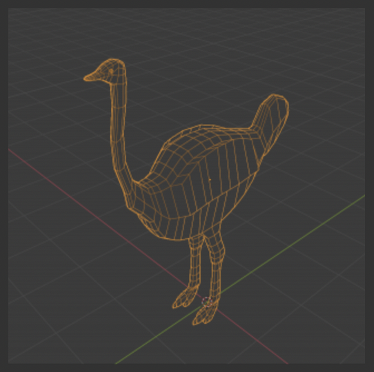

| About Me | Projects | Extracurriculars |
Projects IB Middle Years Candidate CTE Cluster: STEM Pathway: Programming & Software Development Texas High School Endorsement: STEM I am fascinated by the intersection between the physical world we navigate daily, and the integration of new technology that exists in tandem with it. It is in this intersection that technologies like augmented reality phone apps exist. Following completion of my High School Diploma, I will pursue a degree in engineering. |